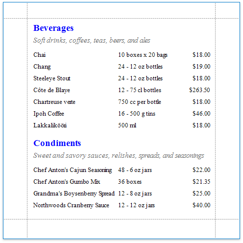

Master-Detail Reports with Subreports
This tutorial demonstrates how to create a master-detail report using the Subreport control. This approach is useful if your data source does not contain master-detail relationship or you prefer to store master and detail reports in different files. Another approach is described at Create a Master-Detail Report (Use Detail Report Bands).
Create a Master Report
Create a new report or open an existing one to use it as a master report.
Bind the report to a required data table.
Drop the required data fields from the Field List onto the Detail band.

Create the Detail Report
Add one more blank report to use it as a detail report.
Bind it to data. For instance, use another table of the same database as for the master report.
Switch to the Field List, select the data fields while holding down CTRL or SHIFT and drag-and-drop them onto the Detail band.

Add parameter to the detail report. Right-click the Parameters section in the Field List and choose Add Parameter in the context menu.
In the invoked Add New Parameter dialog, specify the parameter's Name and Type as well as disable the Show in the parameters panel option.
Click the report's smart tag, and in its actions list, click the Filter String property's ellipsis button.
In the invoked FilterString Editor, construct an expression where the required data field is compared to the created parameter. To access the parameter, click the icon on the right until it turns into a question mark.

Save the detail report by selecting Save | Save As in the toolbar. In the invoked standard Save dialog, specify the folder and file name.

Embed the Subreport
Switch back to the master report and drop the Subreport control from the Toolbox onto the Detail band.

Click the subreport's smart tag and clcik the Report Source URL property's ellipsis button. In the invoked Open dialog, select the previously saved detail report.

Bind the subreport's parameter used as a filter criterion to the master report's corresponding data field, which serve as a source of the parameter value. To do this, click the subreport's smart tag and select Edit Parameter Bindings in the invoked actions list.

In the invoked Parameter Binding Collection Editor, click Add to add new binding. In the property list, specify the data field to which you want to bind a subreport parameter and the name of the parameter that you want to bind.

If required, customize the report's appearance and format values.
View the Result
Switch to Print Preview to see the resulting report.
